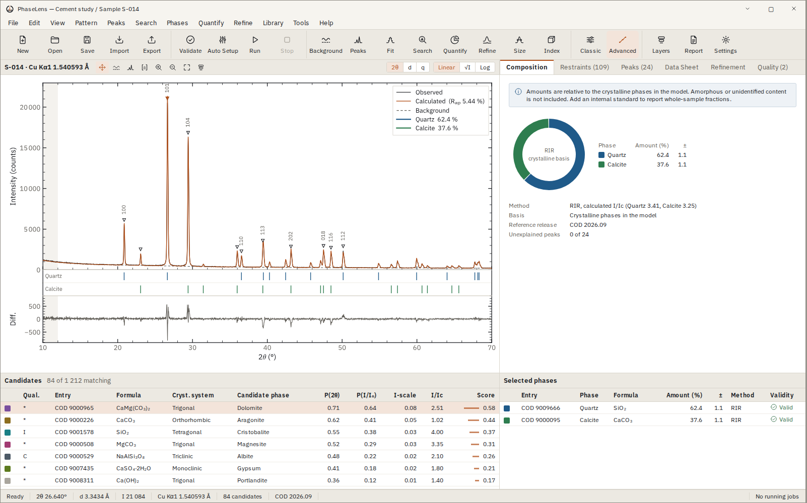
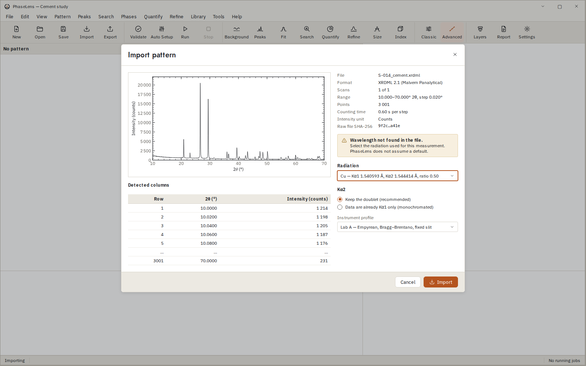
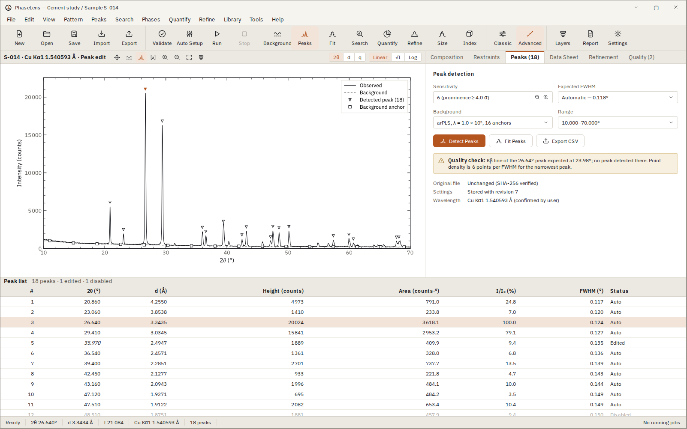
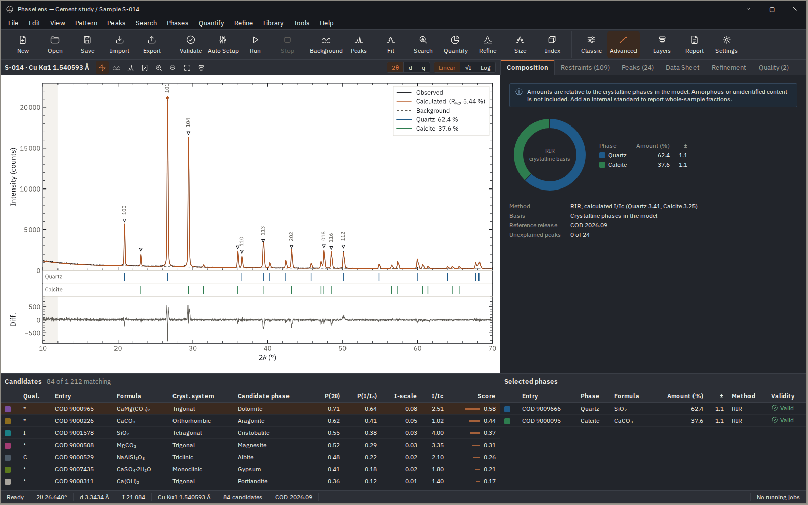
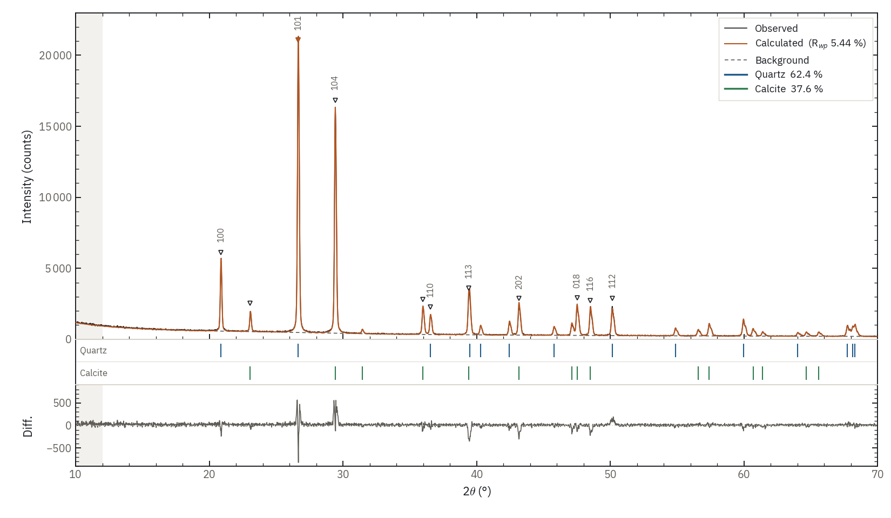

Import, prepare, find peaks, identify phases and quantify them. PhaseLens never guesses the wavelength, the axis or the units, and stores every setting with the result.

A complete powder XRD workflow in one native Windows application. Calculations run in a separate worker process, so the window stays responsive.
XY, XYE, CSV, TSV, ASC, DAT and Malvern Panalytical XRDML 1.0 to 1.5. The dialog shows what was read and what you must still confirm.
Range, background, K-alpha2 stripping, smoothing, zero-shift and displacement correction, and axis conversion (2-theta, d, q, 1/d). Each step is a new versioned result.
Peak detection and pseudo-Voigt fitting with measurement quality control.
Peak search-match, strongest lines, residual searching and whole-pattern matching against a bundled COD-based reference library, with element restraints.
Reference intensity ratio, internal standard, degree of crystallinity and element-composition comparison, with refusals when a method does not apply.
PDF, HTML, JSON and CSV reports, publication figures at 300 or 600 dpi, a generated methods paragraph with citations and a reproducibility package.
Replay a saved project from the exact stored requests. The report states whether the replay is identical.
Add your own phases by CIF import, alongside the bundled reference release.
Headless phaselens-cli.exe, crash recovery, a diagnostics package and a signed automatic update check.
Rules the program enforces so that a result can be defended, not only reported.
Radiation, units, axis type, intensity type and geometry are never assumed.
Processing creates versioned results. Dependent results become stale when an input changes.
Figures of merit rank candidates. PhaseLens never turns them into a confidence percent.
If a method does not apply, for example fewer than two phases for RIR, it refuses with a reason.
Decimation used for drawing never feeds a calculation.
The same input, settings and versions give the same output within a documented tolerance.
Light and dark themes share one layout. Plots follow publication style.




Each scientific feature has a method card with reference, equations, units, assumptions, refusal cases and validity domain.
Known-answer test: lambda = 1.5406 A, 2-theta = 30 deg gives d = 2.976211 A and q = 2.111136 A-1.
The background is added back and never changed. References: Rachinger (1948); Delhez and Mittemeijer (1975); Ladell, Zagofsky and Pearlman (1975).
Weight percent on the basis of the modelled crystalline phases. It does not exclude amorphous or unidentified content.
The unaccounted fraction is amorphous plus unidentified content of the original sample.
The integration table and an "unexplained" area are stored so the fraction can be audited.
Checked against published data and an installed run. Misses are listed as well.
| Gate | Result | Target |
|---|---|---|
| Qualitative search, pure-phase test set | Recall@10 = 0.9967 (SE 0.0033) | met |
| Quantification, IUCr CPD round robin 1a-1h, set A | Mean absolute error 2.44 wt% (target 3) | met |
| Quantification, same round robin, set B | 3.39 wt% (target 3) | missed slightly |
| Open and prepare a 100 000-point pattern | 1.06 s cold, 0.35 s warm | met |
| First plot frame, 100 000 points | 4.6 s cold, 0.10 s warm | not met |
| Full peak search | 17-32 s cold, 2-5 s warm (single phases) | not met |
| Installed application | 33 automated UI tests passed; installed CLI wrote all four report formats | met |
| Signed update | 39 of 39 installed update checks passed | met |
Corundum as a minor phase is overestimated in the round robin (10.3 wt% for 1.15 wt% weighed). Timings were taken on an Intel i7-3540M with 4 GB RAM.
Version 1.0.1 for Windows 10 and 11, 64-bit.
PhaseLens-Setup-1.0.1.exe from the latest release.(Get-FileHash .\PhaseLens-Setup-1.0.1.exe -Algorithm SHA256).Hash.ToLower() # d87c078828cc2c03713f3aaabd5b47dbbf6c3594abcb1691d76e6b0ab2dee1b4
Stated in the release notes and kept visible on purpose.
No XRD data, results or file names leave the computer. The program contacts only the licensing service and the update check.
Converting 2-theta to d or q, and every search, depends on the wavelength. PhaseLens will not assume one.
They are estimates with stated assumptions and uncertainty. Fractions that sum to 100 percent do not prove the absence of amorphous content.
No. Releases and the update manifest are public here; the source code is private.
It is not built in 1.0. Open the written HTML or PDF to check it.
Open an issue and attach the diagnostics package from the Help menu.
Al-Zu'bi, A. A. A. PhaseLens: X-ray diffraction analysis software, version 1.0.1. doi:10.5281/zenodo.24478793
Help > About PhaseLens > Copy citation.